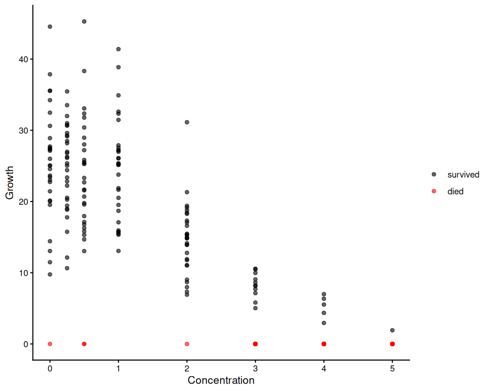
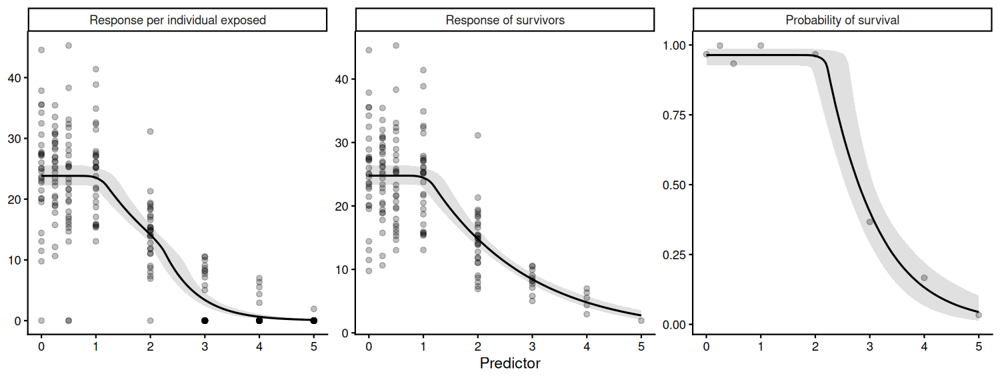
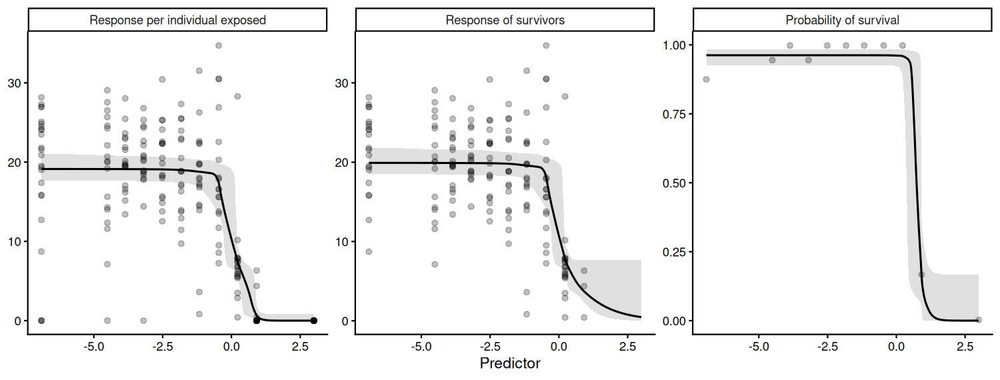
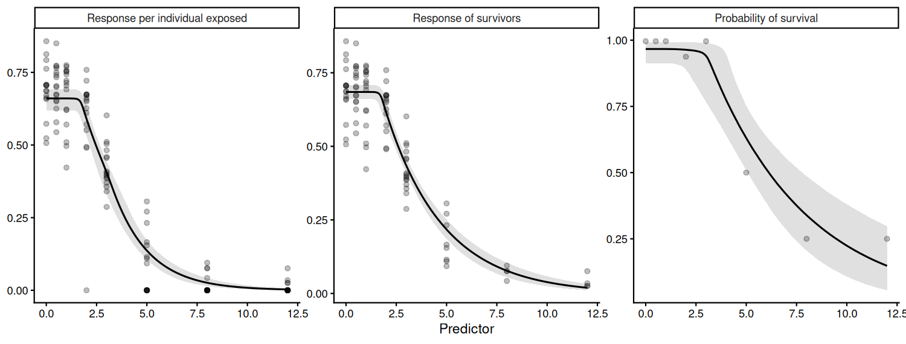

Some toxicity tests damage the response and remove the responder at the same time. A snail exposed to contaminated sediment may grow more slowly, or it may die; an algal culture may be suppressed, or it may fail entirely. The conventional analysis discards the individuals that did not survive and fits a zero-bounded model to the remainder.
That analysis is not incorrect, but it answers a narrower question than it appears to. Dropping the individuals that died conditions the estimate on survival: it describes growth given that the individual lived, rather than growth. Because mortality is itself concentration-dependent, the surviving cohort at a high concentration is a more strongly selected group than the surviving cohort at a low one, and the two are not directly comparable in the way a single fitted curve implies.
A hurdle model retains both processes. It splits the likelihood into
and therefore yields three toxicity estimates where the conventional analysis yields one.
| endpoint | question | in bayesnec
|
|---|---|---|
| response of survivors | how much does exposure suppress growth among individuals that live? | which = "growth" |
| survival | how much does exposure kill? | which = "survival" |
| combined | what is the expected response per individual exposed? |
which = "combined" (default) |
The combined endpoint is the one the conventional analysis cannot produce, and it is generally the quantity of interest for risk assessment, being the expectation over the whole exposed cohort including the individuals that contributed no measurement.
Two properties of these models are worth stating before any code, because both are easily misread.
The survivors-only analysis is not an approximation. The hurdle log-likelihood separates exactly into a term over all individuals and a term over the survivors only,
log p(y_i) = log Bernoulli(alive_i | 1 - hu_i)
+ 1[y_i > 0] * log Gamma(y_i | mu_i, shape)The two blocks share no parameters, so with independent priors the posterior factorises and the survivors-only fit recovers the response block exactly. What it cannot provide is the mortality curve or the combined endpoint. This is demonstrated numerically below.
Zero-inflated Gamma and Beta are the same model as the
hurdle. Zero-inflation differs from a hurdle only when the base
distribution can itself produce zeros, which neither the Gamma nor the
Beta can. The Stan density brms generates for
zero_inflated_beta is the hurdle form, with no mixture at
zero. bayesnec treats the two identically and carries the
brms name through, so hurdle_gamma and
zero_inflated_beta differ in name and in the support of the
response, not in structure.
Throughout, the two components are referred to as “growth” and “survival”, after the case these models were written for. Nothing in the implementation is specific to that reading: any process producing exact zeros alongside a continuous response has the same structure.
To run this vignette we also need
bayesnec provides two ways of fitting these models.
Because the likelihood factorises, the two give equivalent inference;
the choice between them is practical rather than statistical.
Factorised — bnec_hurdle() fits two
ordinary bnec() models, a zero-bounded model to the
non-zero subset and a bernoulli model to the survival
indicator over all individuals, and returns them together as a
bayesnechurdlefit. Combined predictions are formed
afterwards by multiplying the two posteriors.
Joint — bnec(family = "hurdle_gamma")
fits one model with two parameter blocks. brms names the
second block hu (or zi for the zero-inflated
families), and bayesnec gives it its own
concentration-response curve with every non-linear parameter carrying
that prefix: top belongs to the response block,
hutop to the survival block.
factorised (bnec_hurdle) |
joint (family = "hurdle_gamma") |
|
|---|---|---|
| different equation on each block | yes, via model_survival
|
yes, via model_survival
|
| model averaging | full crossed set via crossed_weights()
|
response block only |
| coupling the blocks (e.g. shared group-level effect) | no — breaks the factorisation | yes |
| number of fits | two | one |
The factorised route is the default recommendation because it is what
makes the crossed model comparison tractable. Since
elpd(a, b) = elpd_growth(a) + elpd_survival(b), all
combinations of the two model sets can be compared from two fits rather
than by fitting every pair. The joint route is needed where the blocks
must share structure, which is the one thing the factorisation cannot
express. The two are intended to be used in sequence, and
bnec_joint() connects them: fit and average the model sets
with bnec_hurdle(), select a combination from
crossed_weights(), then refit that combination jointly with
whatever shared structure is required.
Both routes model the probability of surviving,
which declines with concentration and so matches the sign convention of
all 23 bayesnec equations. They arrive at this
differently.
In the factorised route the response is coded as
survival. There is a real response variable for the second fit,
so bnec_hurdle() constructs an alive/dead indicator,
1 for alive, and fits an ordinary bernoulli
model to it using the equation unchanged. Nothing is inverted.
In the joint route there is no second response to
code. hu is a distributional parameter of the
same response, and brms defines it as the
probability of a zero, that is, mortality. That definition belongs to
the family and cannot be exchanged for its complement. The formula is
the only element under the user’s control, so bayesnec
writes
hu = 1 - (an ordinary bayesnec equation, parameters prefixed)which describes the same declining survival curve while leaving
hu with the meaning brms requires. The
1 - is an adapter that makes the joint route agree with the
factorised one, not a modelling decision.
Placing the declining curve on survival, in both routes, has three consequences.
beta is exponentiated in every one,
so they can only decline; an increasing mortality curve is not something
they can express.hutop
is control survival, so it sits near 1 and takes the same prior a
bernoulli fit would use. Under a mortality parameterisation
the equivalent parameter would sit near 0, against its lower bound,
which samples poorly.ecx() and nsec() continue to
apply. Both are defined as a percentage decline from the fitted
control value, which requires a declining curve. ecx()
inverts the zero-probability block back to survival before computing, so
EC10 has the same meaning here as for any other model in the
package.Nothing is lost in exchange. hunec is the concentration
at which survival begins to fall, which is the concentration at which
mortality begins to rise.
When reading output, the consequence is that hutop and
hunec describe surviving:
hutop near 1 indicates near-complete survival in the
controls.
To show the two routes agreeing, and to show what the survivors-only analysis does and does not recover, we simulate a growth experiment in which both processes operate and both are known.
set.seed(333)
nec3 <- function(x, top, beta, nec) {
top * exp(-exp(beta) * (x - nec) * (x > nec))
}
# Truth: growth is suppressed from 1.0 onward, survival only from 2.0 onward,
# so the two thresholds are genuinely different and can be told apart.
conc <- rep(c(0, 0.25, 0.5, 1, 2, 3, 4, 5), each = 30)
mu_true <- nec3(conc, top = 25, beta = log(0.55), nec = 1.0)
p_alive <- nec3(conc, top = 0.97, beta = log(0.9), nec = 2.0)
alive <- rbinom(length(conc), 1, p_alive)
shape <- 12
growth <- rgamma(length(conc), shape = shape, rate = shape / mu_true)
# A death contributes a zero, not a missing row. Every individual that entered
# the experiment must be present in the data or the fit reads a smaller
# experiment rather than more zeros.
sim_dat <- data.frame(x = conc, y = ifelse(alive == 1, growth, 0))
table(sim_dat$x, sim_dat$y > 0)
#>
#> FALSE TRUE
#> 0 1 29
#> 0.25 0 30
#> 0.5 2 28
#> 1 0 30
#> 2 1 29
#> 3 19 11
#> 4 25 5
#> 5 29 1
ggplot(sim_dat, aes(x = x, y = y)) +
geom_point(aes(colour = y == 0), alpha = 0.6) +
scale_colour_manual(values = c("black", "red"),
labels = c("survived", "died"), name = NULL) +
labs(x = "Concentration", y = "Growth") +
theme_classic()
Simulated growth data. Zeros are deaths, not small measurements.
fit_f <- bnec_hurdle(y ~ crf(x, model = "nec3param"), data = sim_dat,
seed = 333, refresh = 0)The summary method reports all three endpoints together,
and labels each by type. Because both components here hold a single
threshold model, every no-effect estimate is a true NEC.
summary(fit_f, ecx = TRUE, ecx_vals = c(10, 50))
#> Object of class bayesnechurdlefit
#>
#> 240 individuals exposed; 77 recorded as zero ( 32.1% )
#>
#> growth : gamma -- nec3param
#> survival : bernoulli -- nec3param
#>
#> No-effect toxicity estimates
#> Q50 Q2.5 Q97.5
#> combined (NEC) 1.08 0.81 1.36
#> growth (NEC) 1.08 0.81 1.36
#> survival (NEC) 2.22 1.91 2.61
#>
#> ECx estimates
#> Q50 Q2.5 Q97.5
#> combined ec10 1.27 1.02 1.53
#> combined ec50 2.23 2.05 2.42
#> growth ec10 1.27 1.02 1.53
#> growth ec50 2.32 2.14 2.51
#> survival ec10 2.31 2.03 2.67
#> survival ec50 2.86 2.59 3.12
#>
#> The combined endpoint is the expected response per individual exposed,
#> i.e. growth * survival. Use which = to select a component.The growth and survival thresholds separate at close to their generating values of 1.0 and 2.0. The combined threshold equals the growth threshold, for reasons set out in the next section.
which = "all" draws the three curves together.
autoplot(fit_f, which = "all")
The three curves. Growth is the response of survivors, survival the probability of contributing a measurement at all, and the combined endpoint their product. Note the zeros along the bottom of the combined panel: these are the deaths, and they are absent from the survivors panel entirely.
The combined no-effect estimate is
pmin(ne_growth, ne_survival) evaluated per posterior draw,
and so equals the growth estimate whenever growth is the more sensitive
endpoint. In practice that is usually the case, because a contaminant
that kills has generally slowed growth at a lower concentration first.
This is a property of thresholds rather than a limitation of the
combination: a threshold marks the concentration at which an effect
begins, and the combined effect begins as soon as either
process does.
The same reasoning applies more generally, and it is worth being
explicit about it, because it determines where the combined endpoint is
informative. The combined curve is the product of the two components,
and below the survival threshold survival sits at its control value, so
the product is a constant multiple of the growth curve there. Any
estimate defined as a proportional decline from the control — which is
how both ecx() and nsec() are defined —
therefore takes the same value on the combined curve as on the growth
curve until the concentration at which mortality begins. The two
separate only above that point.
rbind(
`growth NSEC` = nsec(fit_f, which = "growth"),
`combined NSEC` = nsec(fit_f, which = "combined"),
`growth EC10` = ecx(fit_f, ecx_val = 10, which = "growth"),
`combined EC10` = ecx(fit_f, ecx_val = 10, which = "combined"),
`growth EC50` = ecx(fit_f, ecx_val = 50, which = "growth"),
`combined EC50` = ecx(fit_f, ecx_val = 50, which = "combined")
) |>
round(3)
#> Q50 Q2.5 Q97.5
#> growth NSEC 1.198 0.976 1.474
#> combined NSEC 1.218 0.988 1.493
#> growth EC10 1.265 1.016 1.529
#> combined EC10 1.265 1.016 1.529
#> growth EC50 2.316 2.137 2.505
#> combined EC50 2.226 2.047 2.420In this simulation survival is unaffected until a concentration of 2.0, so the NSEC and the EC10 — both of which fall below that — are effectively the same on the two curves, while the EC50 is reached earlier on the combined curve than on the growth curve. The gap continues to widen with the level of effect considered, and is largest on the response scale itself, as the comparison in the next section shows.
The practical consequence is that a hurdle model is not worth fitting for the sake of a combined no-effect estimate, which will generally reproduce the growth one. It is worth fitting for the survival curve, which a survivors-only analysis cannot produce at all, and for the effect sizes at concentrations where mortality is operating, which it systematically understates.
The same model fitted as a single two-block brms model.
The two blocks appear as nec and hunec.
fit_j <- bnec(y ~ crf(x, model = "nec3param"), data = sim_dat,
family = "hurdle_gamma", seed = 333, refresh = 0)
summary(fit_j)
#> Object of class bayesnecfit containing the nec3param model
#>
#> Family: hurdle_gamma
#> Links: mu = identity; shape = identity; hu = identity
#> Formula: y ~ top * exp(-exp(beta) * (x - nec) * step(x - nec))
#> top ~ 1
#> beta ~ 1
#> nec ~ 1
#> hu ~ 1 - (hutop * exp(-exp(hubeta) * (x - hunec) * step(x - hunec)))
#> hutop ~ 1
#> hubeta ~ 1
#> hunec ~ 1
#> Data: data (Number of observations: 240)
#> Draws: 4 chains, each with iter = 10000; warmup = 8000; thin = 1;
#> total post-warmup draws = 8000
#>
#> Regression Coefficients:
#> Estimate Est.Error l-95% CI u-95% CI Rhat Bulk_ESS Tail_ESS
#> top 24.76 0.71 23.42 26.27 1.00 7339 5584
#> beta -0.58 0.09 -0.74 -0.41 1.00 4958 5702
#> nec 1.09 0.15 0.81 1.36 1.00 4937 5018
#> hutop 0.96 0.01 0.93 0.99 1.00 7111 4234
#> hubeta 0.12 0.21 -0.27 0.57 1.00 5280 5351
#> hunec 2.22 0.22 1.91 2.61 1.00 5165 5992
#>
#> Further Distributional Parameters:
#> Estimate Est.Error l-95% CI u-95% CI Rhat Bulk_ESS Tail_ESS
#> shape 11.03 1.18 8.83 13.60 1.00 7767 5605
#>
#> Draws were sampled using sampling(NUTS). For each parameter, Bulk_ESS
#> and Tail_ESS are effective sample size measures, and Rhat is the potential
#> scale reduction factor on split chains (at convergence, Rhat = 1).
#>
#>
#> Estimate Q2.5 Q97.5
#> NEC 1.09 0.81 1.36
#>
#>
#> Bayesian R2 estimates:
#> Estimate Est.Error Q2.5 Q97.5
#> R2 0.73 0.01 0.70 0.76The component a toxicity estimate refers to is selected differently
in the two routes, and the distinction is easy to miss. A
bayesnechurdlefit from bnec_hurdle() holds two
separate fits, so which = "growth", "survival"
or "combined" selects one of them. A joint fit holds two
parameter blocks inside one model, so ecx() takes
dpar = "mu" or dpar = "hu" instead, naming the
brms distributional parameter. The two are not
interchangeable, so it is worth checking class(fit) where a
component estimate comes back looking like the combined one.
Note also that nec() on a joint fit returns the
combined threshold — the per-draw minimum of the two
blocks, as described above — and has no argument for selecting a block.
Comparing like with like:
comparison <- rbind(
`factorised, combined` = nec(fit_f, which = "combined"),
`joint, combined` = nec(fit_j),
`factorised, growth EC10` = ecx(fit_f, ecx_val = 10, which = "growth"),
`joint, growth EC10` = ecx(fit_j, ecx_val = 10, dpar = "mu"),
`factorised, survival EC10` = ecx(fit_f, ecx_val = 10, which = "survival"),
`joint, survival EC10` = ecx(fit_j, ecx_val = 10, dpar = "hu")
)
round(comparison, 3)
#> Q50 Q2.5 Q97.5
#> factorised, combined 1.077 0.806 1.364
#> joint, combined 1.086 0.807 1.358
#> factorised, growth EC10 1.265 1.016 1.529
#> joint, growth EC10 1.275 1.021 1.524
#> factorised, survival EC10 2.311 2.027 2.674
#> joint, survival EC10 2.316 2.032 2.679Differences between the two routes are Monte Carlo noise rather than a modelling choice.
The point made in the overview, demonstrated numerically. Fitting an ordinary Gamma model to the non-zero rows only:
fit_s <- bnec(y ~ crf(x, model = "nec3param"),
data = subset(sim_dat, y > 0),
family = "Gamma", seed = 333, refresh = 0)
rbind(`survivors only` = nec(fit_s),
`hurdle, growth` = nec(fit_f, which = "growth"))
#> Q50 Q2.5 Q97.5
#> survivors only 1.07742 0.805644 1.363567
#> hurdle, growth 1.07742 0.805644 1.363567These are identical to every printed digit, because the factorised route is this fit, run on the same subset with the same seed. The survivors-only analysis is a correct estimate of the response of survivors, and nothing is gained by replacing it.
The difficulty lies not in the fit but in reporting it as the effect of exposure on growth. Comparing the two on the response scale:
nd <- data.frame(x = c(0, 1, 2, 3, 4, 5))
med <- function(m) apply(m, 2, median)
data.frame(
x = nd$x,
growth = round(med(posterior_epred(fit_f, which = "growth", newdata = nd)), 2),
survival = round(med(posterior_epred(fit_f, which = "survival", newdata = nd)), 3),
combined = round(med(posterior_epred(fit_f, which = "combined", newdata = nd)), 2)
)
#> x growth survival combined
#> 1 0 24.77 0.963 23.83
#> 2 1 24.50 0.963 23.55
#> 3 2 14.78 0.961 14.15
#> 4 3 8.43 0.410 3.46
#> 5 4 4.81 0.131 0.63
#> 6 5 2.74 0.043 0.12At the control the two agree, because almost all individuals survive. At the top concentration the survivors-only analysis reports a growth of about 2.7 while the expected growth per individual exposed is about 0.12, a factor of more than twenty. The difference is not error; the two numbers answer different questions. Which is appropriate depends on whether the assessment concerns the individuals that survive or the population that was exposed. The survivors-only analysis also cannot produce the mortality curve, which here is the effect with the more clearly identified threshold.
The factorised route makes the full crossed model comparison
available. Here we fit a set spanning both threshold and smooth models
to each component. As elsewhere in bayesnec, model
averaging is the preferred way of handling uncertainty about the
functional form of the response [see the Multi
model usage vignette], and it matters as much for the survival
component as for the growth component.
mod_set <- c("nec3param", "nec4param", "ecx4param", "ecxexp", "ecxwb1",
"ecxll3")
# adapt_delta is raised because the four-parameter models are weakly identified
# on the survival component here -- only the top three concentrations carry much
# mortality information, so the lower asymptote is poorly constrained. iter is
# reduced from the bayesnec default of 1e4 to keep a twelve-fit example
# tractable; these models converge comfortably at this length. See the fitting
# section of the worked example below for why `resolution` is reduced.
fit_m <- bnec_hurdle(y ~ crf(x, model = mod_set), data = sim_dat,
seed = 333, refresh = 0, iter = 4e3, cores = 4,
resolution = 200,
control = list(adapt_delta = 0.99))
round(crossed_weights(fit_m), 3)
#> survival
#> growth nec3param nec4param ecx4param ecxexp ecxwb1 ecxll3
#> nec3param 0.370 0.115 0.040 0 0.026 0.042
#> nec4param 0.142 0.044 0.015 0 0.010 0.016
#> ecx4param 0.026 0.008 0.003 0 0.002 0.003
#> ecxexp 0.000 0.000 0.000 0 0.000 0.000
#> ecxwb1 0.013 0.004 0.001 0 0.001 0.001
#> ecxll3 0.072 0.022 0.008 0 0.005 0.008Rows are growth models, columns survival models, and the entries are
weights over every combination of the two. Because the components are
independent, the crossed weights are exactly the outer product of the
two components’ weights, so all n_growth * n_survival
combinations follow from the two fits alone rather than from fitting
every pair. Note that this identity is specific to pseudo-BMA; stacking
optimises a different objective whose solution is not generally an outer
product.
summary(fit_m, ecx = TRUE, ecx_vals = c(10, 50), resolution = 500)
#> Object of class bayesnechurdlefit
#>
#> 240 individuals exposed; 77 recorded as zero ( 32.1% )
#>
#> growth : gamma -- nec3param, nec4param, ecx4param, ecxexp, ecxwb1, ecxll3
#> survival : bernoulli -- nec3param, nec4param, ecx4param, ecxexp, ecxwb1, ecxll3
#>
#> No-effect toxicity estimates
#> Q50 Q2.5 Q97.5
#> combined (N(S)EC) 1.07 0.31 1.43
#> growth (N(S)EC) 1.07 0.31 1.44
#> survival (N(S)EC) 2.24 1.53 2.87
#>
#> NSEC values appear where a model set contains smooth (ECx) models, which
#> carry no threshold parameter; N(S)EC is a model-averaged combination
#> of the two (Fisher et al. 2023).
#>
#> ECx estimates
#> Q50 Q2.5 Q97.5
#> combined ec10 1.25 0.49 1.58
#> combined ec50 2.22 1.97 2.44
#> growth ec10 1.26 0.49 1.57
#> growth ec50 2.31 2.10 2.50
#> survival ec10 2.34 1.88 2.89
#> survival ec50 2.88 2.56 3.16
#>
#> The combined endpoint is the expected response per individual exposed,
#> i.e. growth * survival. Use which = to select a component.Each model set now contains smooth (ECx) models alongside threshold
ones. A smooth model has no threshold parameter, so its contribution to
the weighted posterior is an NSEC (Fisher and Fox
2023) rather than an NEC, and the model-averaged estimate is a
weighted mixture of the two. bayesnec refers to this as the
N(S)EC (Fisher et al. 2023), and
summary labels each endpoint accordingly. The same quantity
is returned by nec(), which emits a message to the same
effect but returns an unlabelled vector; summary is the
better choice where the distinction matters.
Model averaging is done on the factorised fit, because the joint
route can average only over the response block. Where a single fit is
required — most often because the two blocks need to share structure,
which the factorisation cannot express — best_crossed()
reports the combination carrying the highest crossed weight and
bnec_joint() refits that combination as one two-block
model.
best_crossed(fit_m)
#> $growth
#> [1] "nec3param"
#>
#> $survival
#> [1] "nec3param"
#>
#> $weight
#> [1] 0.3699382
fit_bj <- bnec_joint(fit_m, seed = 333, refresh = 0, iter = 4e3, cores = 4,
control = list(adapt_delta = 0.99))
summary(fit_bj)
#> Object of class bayesnecfit containing the nec3param model
#>
#> Family: hurdle_gamma
#> Links: mu = identity; shape = identity; hu = identity
#> Formula: y ~ top * exp(-exp(beta) * (x - nec) * step(x - nec))
#> top ~ 1
#> beta ~ 1
#> nec ~ 1
#> hu ~ 1 - (hutop * exp(-exp(hubeta) * (x - hunec) * step(x - hunec)))
#> hutop ~ 1
#> hubeta ~ 1
#> hunec ~ 1
#> Data: data (Number of observations: 240)
#> Draws: 4 chains, each with iter = 4000; warmup = 3200; thin = 1;
#> total post-warmup draws = 3200
#>
#> Regression Coefficients:
#> Estimate Est.Error l-95% CI u-95% CI Rhat Bulk_ESS Tail_ESS
#> top 24.78 0.72 23.41 26.32 1.00 2096 1792
#> beta -0.58 0.09 -0.75 -0.40 1.00 1664 2113
#> nec 1.08 0.15 0.81 1.37 1.00 1437 1347
#> hutop 0.96 0.01 0.93 0.99 1.00 2650 1980
#> hubeta 0.12 0.22 -0.28 0.58 1.00 1866 1706
#> hunec 2.22 0.22 1.91 2.62 1.00 1790 2364
#>
#> Further Distributional Parameters:
#> Estimate Est.Error l-95% CI u-95% CI Rhat Bulk_ESS Tail_ESS
#> shape 11.02 1.22 8.85 13.62 1.00 2858 2113
#>
#> Draws were sampled using sampling(NUTS). For each parameter, Bulk_ESS
#> and Tail_ESS are effective sample size measures, and Rhat is the potential
#> scale reduction factor on split chains (at convergence, Rhat = 1).
#>
#>
#> Estimate Q2.5 Q97.5
#> NEC 1.08 0.81 1.37
#>
#>
#> Bayesian R2 estimates:
#> Estimate Est.Error Q2.5 Q97.5
#> R2 0.73 0.01 0.70 0.76The equation used for each block is set independently, so the same
fit can be requested directly: crf in the formula names the
response block’s equation and model_survival names the
survival block’s. bnec_joint() is a convenience wrapper
that fills in the two names from best_crossed().
bnec(y ~ crf(x, model = "nec3param"), data = sim_dat,
family = "hurdle_gamma", model_survival = "ecx4param")Selecting a single combination discards the rest of the crossed
table, which is a real loss where the weights are spread, so this step
is worth taking only where the joint form is needed for a reason the
factorisation cannot serve. Group-level structure spanning both blocks
is the main such reason, and is supplied through the
formula argument of bnec_joint().
The nassarius dataset holds four chronic toxicity tests
on the tropical marine snail Nassarius dorsatus, one row per
individual snail that entered the experiment. The test method follows
Trenfield et al. (2016), although that
paper does not describe the mortality scenario these models address. The
contaminants are anonymised as A–D and the dose units are not stated, so
only the relative spacing of doses — which is all any toxicity estimate
depends on — is preserved.
The endpoint is a growth measure, which matters for the reason set out in the data-preparation section below: growth can in principle be negative, so zeros in it cannot be assumed structural without checking how negatives were handled. In these data they were not floored — four survivors are recorded negative, which is the evidence that no truncation happened upstream.
data(nassarius)
str(nassarius)
#> 'data.frame': 1208 obs. of 6 variables:
#> $ contaminant: Factor w/ 4 levels "A","B","C","D": 1 1 1 1 1 1 1 1 1 1 ...
#> $ dose : num 0 0 0 0 0 0 0 0 0 0 ...
#> $ tank : chr "A-1" "A-1" "A-1" "A-1" ...
#> $ alive : int 1 1 1 1 1 0 1 1 1 1 ...
#> $ growth : num 8.72 28.17 27.28 15.86 19.02 ...
#> $ record : Factor w/ 5 levels "measured","sentinel_code",..: 1 1 1 1 1 2 1 1 1 1 ...Mortality is substantial and concentration-dependent in every test, which is what makes these data unsuitable for a survivors-only analysis.
nassarius |>
group_by(contaminant) |>
summarise(exposed = n(), survived = sum(alive),
died = sum(alive == 0),
pct_died = round(100 * mean(alive == 0), 1), .groups = "drop")
#> # A tibble: 4 × 5
#> contaminant exposed survived died pct_died
#> <fct> <int> <int> <int> <dbl>
#> 1 A 204 166 38 18.6
#> 2 B 284 63 221 77.8
#> 3 C 348 320 28 8
#> 4 D 372 327 45 12.1The alive column here is the product of a reconstruction
rather than something read directly off the source records. In those
records a death appeared as one of four traces, and only the first is
obvious:
The record column preserves that provenance, and the
result is worth examining before any model is fitted.
nassarius |>
filter(alive == 0) |>
mutate(record = droplevels(record)) |>
count(contaminant, record, .drop = FALSE) |>
tidyr::pivot_wider(names_from = record, values_from = n)
#> # A tibble: 4 × 5
#> contaminant sentinel_code blank_rep absent_tank absent_dose
#> <fct> <int> <int> <int> <int>
#> 1 A 8 0 12 18
#> 2 B 11 0 0 210
#> 3 C 4 0 0 24
#> 4 D 0 9 12 24Only the first two categories appear in the source file. The last two are snails that are absent from it altogether — a tank missing from a treatment that ran, or a treatment missing entirely because nothing in it survived — and they account for 79% to 95% of the deaths in every test.
Had these been omitted, each fit would have read a smaller experiment with less mortality rather than a full one with more. The fourth trace is the most consequential because it cannot be recovered from the file at any level of care: it requires returning to the test design and establishing which treatments were set up. Here every test was taken to a common top dose at which nothing survived, and no test records it.
A reinstated death is not a guess. A treatment that ran and killed every individual is a fact about the experiment that happens to have been recorded by omission, and recovering it adds information rather than inventing it. The reconstruction is part of the analysis rather than a caveat attached to it, and the next section quantifies what it contributes.
B is the most severely affected of the four tests, and for that reason it is the clearest illustration of why a hurdle model is needed.
B <- subset(nassarius, contaminant == "B")
survivors <- subset(B, growth > 0)
c(exposed = nrow(B), survived = nrow(survivors),
doses_total = length(unique(B$dose)),
doses_with_a_survivor = length(unique(survivors$dose)))
#> exposed survived doses_total
#> 284 63 14
#> doses_with_a_survivor
#> 4A survivors-only analysis of these data would contain 63 snails of the 284 exposed and, because a dose at which nothing survived contributes no rows, only the four lowest doses. The ten doses from 0.30 upward would not appear in it at all: not as zeros, and not in any other form.
round(tapply(survivors$growth, survivors$dose, mean), 2)
#> 0 0.02 0.05 0.1
#> 24.82 24.52 19.83 6.94Those four numbers are the entire dataset such an analysis would see. It would report a smooth decline in growth across a dose range topping out at 0.10, and each of its fitted values would be defensible. What it could not report is that the contaminant sterilises the experiment at three times that dose. The 221 snails carrying that information are precisely the ones it discards. This is the conditioning problem in an extreme form: 78% of the cohort and 71% of the tested doses are removed from the analysis by the act of dropping the dead.
Only for the survival component — and that is exactly the point.
The three variants below differ only in rows recording individuals that died. They contain 74, 95 and 284 snails respectively, but all three contain the same 63 survivors. The growth component is fitted to the non-zero responses alone, so it is identical in all three by construction: a survivors-only analysis of B returns the same answer however much of the mortality is reconstructed. That is the factorisation demonstrated in the simulation above, seen from the other side — reinstated deaths are invisible to the response block.
The survival component is a bernoulli model over every
individual that entered the experiment, so it sees all of them.
Refitting that block on progressively more of the reconstruction:
observed <- subset(B, record != "absent_dose")
variants <- list(
`recorded deaths only` = observed,
`+ first all-dead dose` = rbind(observed, subset(B, dose == 0.30)),
`+ all all-dead doses` = B
)
off <- min(B$dose[B$dose > 0]) / 10
sens <- lapply(variants, function(d) {
d$log_dose <- log(d$dose + off)
f <- bnec(alive ~ crf(log_dose, model = "nec3param"), data = d,
family = "bernoulli", seed = 10, refresh = 0, cores = 4,
control = list(adapt_delta = 0.99))
nec(f, xform = function(z) exp(z) - off)
})
do.call(rbind, sens)
#> Q50 Q2.5 Q97.5
#> recorded deaths only 0.06574407 0.03670270 0.09733147
#> + first all-dead dose 0.08272188 0.05214153 0.09824861
#> + all all-dead doses 0.08520196 0.05699393 0.09830694Two conclusions follow, and they have different implications.
Reinstating the first all-dead dose changes the survival threshold, moving it by about 25% and halving the credible interval. Analysing only the doses that appear in the file biases that threshold low, because the last dose those records contain is one at which half the snails were still alive, so the fit never sees the concentration at which survival collapses. Nothing about the growth estimate moves, which is why this cost is invisible to an analysis that looks only at survivors.
The all-dead doses above it add little — about 3%, well inside the interval. Once the fitted curve has reached zero, further doses at which every individual died are largely redundant. The information about where survival collapses sits in the narrow window between the last dose with full survival and the first with none.
The second conclusion is the more useful in practice, because it indicates where effort belongs. Reconstructing the first treatment that killed every individual is essential and irreplaceable; reconstructing those beyond it makes little difference to the estimate. Where records are incomplete, that is where to concentrate.
B’s high mortality is a finding rather than a limitation of the dataset. Its growth curve rests on four doses because the contaminant kills every individual beyond them, and no analysis can recover growth measurements from snails that did not survive to be measured. The contribution of the hurdle model is that it reports this rather than conditioning it away.
Two decisions have to be made before fitting, and both are of the kind usually made silently.
The four negative growth values. The assay is destructive, so growth is obtained by referencing each snail to a baseline mean rather than to its own starting size. That referencing carries error, and four survivors of 876 are slightly negative. The Gamma distribution cannot accommodate them.
subset(nassarius, alive == 1 & growth <= 0)
#> contaminant dose tank alive growth record
#> 159 A 1.25 A-27 1 -0.7424596 measured
#> 169 A 2.50 A-29 1 -7.2883168 measured
#> 766 C 10.00 C-124 1 -1.4209774 measured
#> 797 C 15.00 C-129 1 -2.7495489 measuredThis is measurement noise around a true value near zero — a random zero region rather than a structural one — so these snails must not be passed to the hurdle as though they had died. They are nudged to half the smallest positive value in their own test. At 0.46% of survivors this is immaterial to the fit, but it is a substitution and is stated rather than done quietly. See the data-preparation section below for why the alternative, flooring them to zero, would be considerably worse than immaterial.
The control on a log dose scale. Dose spans several
orders of magnitude, so the models are fitted on a log scale, and
log(0) is undefined. The control is placed one decade below
the lowest tested dose: far enough to read as a control, close enough
not to stretch the fitted range.
Before fitting, the simulation objects are released. Every
bnec fit forks worker processes that share the memory of
the session that spawned them, and each page those workers touch stops
being shared, so a large session makes every subsequent fit more
expensive. None of the simulation fits are referenced again.
Each test is fitted with mod_set, the same six-model set
used in the simulation above, on both components. That is 48 model fits
in total, so the loop below is written to hold as few of them at once as
it can: each test is summarised as it is fitted and then discarded,
keeping only contaminant A for the plots that follow. Holding all four
six-model hurdle fits at once is the largest memory cost in this
vignette, and an avoidable one.
tests <- split(nassarius, nassarius$contaminant)
# adapt_delta is pushed high because the survival curve is weakly identified in
# every test -- mortality is confined to the top one or two doses.
#
# `cores` is worth setting explicitly: bayesnec does not pass one through, so
# brms falls back to mc.cores, which is 1 unless it has been changed, and the
# chains then run one after another. On a fit of this size that is the single
# largest cost.
#
# `resolution` sets the predictor grid each fit stores its predictions on. It is
# reduced from the default 1000 because the only reported quantity that grid
# feeds is the NSEC contribution to the model-averaged N(S)EC, and that is
# located by interpolation (`modelbased::zero_crossings`, which itself samples
# on a fixed 100-point grid), so its precision saturates well below 200. ECx is
# read off a fresh grid at reporting time, where a finer one is requested.
fit_test <- function(d) {
bnec_hurdle(growth ~ crf(log_dose, model = mod_set),
data = prep(d), seed = 10, refresh = 0, cores = 4, iter = 4e3,
resolution = 200,
control = list(adapt_delta = 0.99, max_treedepth = 12))
}
estimates <- function(f, ct, back) {
do.call(rbind, lapply(c("growth", "survival", "combined"), function(w) {
data.frame(
contaminant = ct, endpoint = w,
ne = nec(f, which = w, xform = back)[1],
ec10 = ecx(f, ecx_val = 10, which = w, xform = back,
resolution = 500)[1],
ec50 = ecx(f, ecx_val = 50, which = w, xform = back,
resolution = 500)[1],
row.names = NULL
)
}))
}
endpoints <- list()
for (ct in names(tests)) {
f <- fit_test(tests[[ct]])
endpoints[[ct]] <- estimates(f, ct, back_transform(tests[[ct]]))
# Contaminant A is carried forward for the summary, plot and crossed weights
# below; the rest are released as soon as their estimates are extracted.
if (ct == "A") fit_a <- f
rm(f)
gc()
}The summary method reports all three endpoints for one
test. Passing xform applies the back-transformation to
every estimate in the table, so the values are on the original dose
scale.
# resolution is the number of predictor values ECx is read off, and every call
# rebuilds the component predictions for both six-model sets. The default of
# 1000 is finer than two significant figures can show over this dose range, and
# 500 keeps the memory these repeated rebuilds need well under control.
summary(fit_a, ecx = TRUE, ecx_vals = c(10, 50), resolution = 500,
xform = back_transform(tests[["A"]]))
#> Object of class bayesnechurdlefit
#>
#> 204 individuals exposed; 38 recorded as zero ( 18.6% )
#>
#> growth : gamma -- nec3param, nec4param, ecx4param, ecxexp, ecxwb1, ecxll3
#> survival : bernoulli -- nec3param, nec4param, ecx4param, ecxexp, ecxwb1, ecxll3
#>
#> No-effect toxicity estimates
#> Q50 Q2.5 Q97.5
#> combined (N(S)EC) 0.60 0.20 1.15
#> growth (N(S)EC) 0.60 0.20 1.15
#> survival (N(S)EC) 1.71 1.17 2.40
#>
#> NSEC values appear where a model set contains smooth (ECx) models, which
#> carry no threshold parameter; N(S)EC is a model-averaged combination
#> of the two (Fisher et al. 2023).
#>
#> ECx estimates
#> Q50 Q2.5 Q97.5
#> combined ec10 0.63 0.00 1.15
#> combined ec50 1.06 0.74 1.24
#> growth ec10 0.63 0.00 1.12
#> growth ec50 1.06 0.76 1.27
#> survival ec10 1.71 0.00 2.39
#> survival ec50 2.12 1.46 2.49
#>
#> The combined endpoint is the expected response per individual exposed,
#> i.e. growth * survival. Use which = to select a component.Every estimate is labelled N(S)EC, because each model set mixes threshold and smooth models. This is the intended behaviour of a model-averaged no-effect estimate, but it means the reported values are not pure NEC values and should not be described as such.
Collecting the median estimates across the four tests, where
ne is the no-effect estimate — the N(S)EC, as above:
endpoints <- do.call(rbind, endpoints)
endpoints[, 3:5] <- signif(endpoints[, 3:5], 2)
endpoints
#> contaminant endpoint ne ec10 ec50
#> A.1 A growth 0.600 0.630 1.100
#> A.2 A survival 1.700 1.700 2.100
#> A.3 A combined 0.600 0.640 1.100
#> B.1 B growth 0.050 0.047 0.073
#> B.2 B survival 0.080 0.081 0.100
#> B.3 B combined 0.049 0.047 0.071
#> C.1 C growth 0.029 0.029 3.500
#> C.2 C survival 14.000 15.000 16.000
#> C.3 C combined 0.029 0.029 3.300
#> D.1 D growth 0.034 0.079 7.700
#> D.2 D survival 12.000 13.000 15.000
#> D.3 D combined 0.034 0.081 7.500Three features of these results are notable.
The combined and growth rows are all but identical. The combined no-effect estimate matches the growth estimate exactly for A, C and D, and differs only in the third decimal for B, 0.049 against 0.050. This is the per-draw minimum at work: the combined estimate can depart from growth only where mortality begins close enough to the growth threshold to bind on at least some draws. B is the test where it comes closest — its survival estimate is 1.6 times its growth estimate, against ratios of 2.8 for A and several hundred for C and D — which is why B is the one that moves, and why it moves so little.
Growth and survival, in contrast, separate widely. The two sit within a factor of two for B and a factor of three for A, but more than two orders of magnitude apart for C and D, whose growth declines from the low end of the tested range while survival holds until close to the top dose of 20. A single number from a survivors-only analysis cannot express that, and the four tests would look far more alike than they are. The survival curve is also the one thing such an analysis cannot produce at any level of effect.
What the combined endpoint adds appears above the no-effect level. The combined EC50 sits at or below the growth EC50 in all four tests: about 6% lower for C, 3% for B and D, and unchanged for A, whose growth EC50 of 1.1 falls below the concentration at which its survival curve leaves the control. C and D separate at EC50 despite survival estimates two orders of magnitude higher, because a model-averaged survival curve containing smooth models is never perfectly flat and so contributes a little decline well below its nominal threshold. Differences in the last digit of the EC10 column are at the scale of the predictor grid rather than anything interpretable. The larger contribution is on the response scale, where the combined endpoint gives the expected growth per individual exposed rather than per individual that lived.
autoplot(fit_a, which = "all")
Contaminant A: the combined endpoint, the growth of survivors, and the probability of survival. The predictor is on the log dose scale used for fitting.
Each component was fitted with a set of six models, so there are 36 crossed combinations, all available from the two fits.
round(crossed_weights(fit_a), 3)
#> survival
#> growth nec3param nec4param ecx4param ecxexp ecxwb1 ecxll3
#> nec3param 0.147 0.027 0.026 0 0.023 0.119
#> nec4param 0.088 0.016 0.015 0 0.014 0.071
#> ecx4param 0.060 0.011 0.010 0 0.009 0.048
#> ecxexp 0.007 0.001 0.001 0 0.001 0.005
#> ecxwb1 0.062 0.011 0.011 0 0.010 0.050
#> ecxll3 0.067 0.012 0.012 0 0.010 0.054Weight is spread across several combinations rather than concentrated
in one, which is the situation model averaging exists to handle.
Reporting a single crossed combination would discard that uncertainty,
and it is the reason bnec_joint() should be reserved for
cases where the joint form is required for structural reasons.
zero_inflated_beta is the two-block family for a
proportional response bounded on (0, 1), and is the direct analogue of
hurdle_gamma: a Beta response block for the units that gave
a measurement, and a survival block for whether a unit gave one at all.
It applies where a proportion is measured on each unit and some units
fail entirely — an algal culture expressed as a proportion of a design
ceiling, with replicates that crashed, for example.
In practice the conditions under which it is appropriate are more restrictive than they first appear, and the most likely misuse is reaching for it simply because a proportion happens to contain some zeros.
A usable hurdle-Beta case requires all of:
bayesnec model set;The last condition is the binding one, and it fails for structural reasons rather than by accident:
A response inflated at both boundaries requires
zero_one_inflated_beta or an ordered-Beta treatment,
neither of which is available in bayesnec. A response that
is a ratio to a per-unit baseline is often better modelled with
hurdle_gamma on the uncapped ratio.
No dataset shipped with bayesnec, and none of the
candidates considered while this vignette was written, satisfies all
four conditions — the mass-at-1 condition is the one that keeps failing,
for the structural reasons just given. The demonstration below is
therefore simulated, and deliberately constructed to
meet every condition. It shows what the family does when it is the right
reach; it is not evidence that any particular real dataset qualifies,
and the checklist above remains the thing to work through before using
it.
The scenario is an algal growth-rate test. Growth is expressed as a proportion of a ceiling fixed in advance by the test protocol — not a control mean and not the observed maximum, which is what condition one requires. Cultures that crash contribute an exact zero; cultures that grow contribute a proportion drawn from a Beta, which can never itself return a zero. So every zero in the data is structural.
set.seed(101)
# Growth declines from a control proportion of 0.70 with a threshold at 1.5;
# cultures start crashing only from 3.0, so the two thresholds are distinct.
conc <- rep(c(0, 0.5, 1, 2, 3, 5, 8, 12), each = 16)
mu_true <- nec3(conc, top = 0.70, beta = log(0.32), nec = 1.5)
p_alive <- nec3(conc, top = 0.98, beta = log(0.20), nec = 3.0)
alive <- rbinom(length(conc), 1, p_alive)
# phi is the Beta precision: higher values give tighter scatter about mu.
prop <- rbeta(length(conc), mu_true * 30, (1 - mu_true) * 30)
zib_dat <- data.frame(x = conc, y = ifelse(alive == 1, prop, 0))Checking the two conditions that can be read directly off the data — no mass at 1, and zeros confined to crashed cultures rather than merely small measurements:
c(n = nrow(zib_dat),
zeros = sum(zib_dat$y == 0),
max = round(max(zib_dat$y), 3),
at_or_above_1 = sum(zib_dat$y >= 1))
#> n zeros max at_or_above_1
#> 128.000 33.000 0.857 0.000
table(dose = zib_dat$x, measured = zib_dat$y > 0)
#> measured
#> dose FALSE TRUE
#> 0 0 16
#> 0.5 0 16
#> 1 0 16
#> 2 1 15
#> 3 0 16
#> 5 8 8
#> 8 12 4
#> 12 12 4The largest observed proportion is well short of 1 and nothing reaches it, so there is no boundary spike for the Beta to choke on. Mortality is graded across the top four doses rather than jumping straight to total loss, which leaves the response block with data at every dose and the survival threshold identifiable.
Both routes take the data unchanged. The factorised route selects the response family from the non-zero rows, and so picks a Beta here rather than the Gamma appropriate to the snail example.
zib_f <- bnec_hurdle(y ~ crf(x, model = "nec3param"), data = zib_dat,
seed = 101, refresh = 0)
summary(zib_f, ecx = TRUE, ecx_vals = c(10, 50))
#> Object of class bayesnechurdlefit
#>
#> 128 individuals exposed; 33 recorded as zero ( 25.8% )
#>
#> growth : beta -- nec3param
#> survival : bernoulli -- nec3param
#>
#> No-effect toxicity estimates
#> Q50 Q2.5 Q97.5
#> combined (NEC) 1.69 1.42 1.92
#> growth (NEC) 1.69 1.42 1.92
#> survival (NEC) 3.16 2.11 4.10
#>
#> ECx estimates
#> Q50 Q2.5 Q97.5
#> combined ec10 2.00 1.76 2.20
#> combined ec50 3.48 3.15 3.82
#> growth ec10 2.00 1.76 2.20
#> growth ec50 3.69 3.45 4.00
#> survival ec10 3.65 2.74 4.52
#> survival ec50 6.34 5.28 7.97
#>
#> The combined endpoint is the expected response per individual exposed,
#> i.e. growth * survival. Use which = to select a component.The joint route asks for the family explicitly. Its second block is
named zi rather than hu, so the survival
parameters appear as zitop, zibeta and
zinec; nothing else about the specification changes.
zib_j <- bnec(y ~ crf(x, model = "nec3param"), data = zib_dat,
family = "zero_inflated_beta", seed = 101, refresh = 0)
summary(zib_j)
#> Object of class bayesnecfit containing the nec3param model
#>
#> Family: zero_inflated_beta
#> Links: mu = identity; phi = identity; zi = identity
#> Formula: y ~ top * exp(-exp(beta) * (x - nec) * step(x - nec))
#> top ~ 1
#> beta ~ 1
#> nec ~ 1
#> zi ~ 1 - (zitop * exp(-exp(zibeta) * (x - zinec) * step(x - zinec)))
#> zitop ~ 1
#> zibeta ~ 1
#> zinec ~ 1
#> Data: data (Number of observations: 128)
#> Draws: 4 chains, each with iter = 10000; warmup = 8000; thin = 1;
#> total post-warmup draws = 8000
#>
#> Regression Coefficients:
#> Estimate Est.Error l-95% CI u-95% CI Rhat Bulk_ESS Tail_ESS
#> top 0.68 0.01 0.66 0.71 1.00 6850 5160
#> beta -1.06 0.09 -1.24 -0.90 1.00 6160 5064
#> nec 1.69 0.12 1.42 1.92 1.00 5650 4663
#> zitop 0.97 0.02 0.91 0.99 1.00 6760 5048
#> zibeta -1.50 0.24 -2.00 -1.05 1.00 5549 4957
#> zinec 3.16 0.44 2.12 4.14 1.00 5657 3156
#>
#> Further Distributional Parameters:
#> Estimate Est.Error l-95% CI u-95% CI Rhat Bulk_ESS Tail_ESS
#> phi 28.53 4.18 21.11 37.72 1.00 7100 5692
#>
#> Draws were sampled using sampling(NUTS). For each parameter, Bulk_ESS
#> and Tail_ESS are effective sample size measures, and Rhat is the potential
#> scale reduction factor on split chains (at convergence, Rhat = 1).
#>
#>
#> Estimate Q2.5 Q97.5
#> NEC 1.69 1.41 1.92
#>
#>
#> Bayesian R2 estimates:
#> Estimate Est.Error Q2.5 Q97.5
#> R2 0.88 0.01 0.86 0.90Set against the generating values:
| parameter | generating value | joint estimate |
|---|---|---|
growth top
|
0.70 | 0.68 |
growth nec
|
1.5 | 1.69 |
survival zitop
|
0.98 | 0.97 |
survival zinec
|
3.0 | 3.16 |
Beta precision phi
|
30 | 28.5 |
The two routes agree, as they must:
rbind(factorised = nec(zib_f),
joint = nec(zib_j))
#> Q50 Q2.5 Q97.5
#> factorised 1.693801 1.417784 1.918231
#> joint 1.689459 1.414871 1.919908Every generating value falls inside its credible interval. The two thresholds are the least precisely recovered, and both point estimates sit above the truth — the growth threshold at 1.69 against a generating value of 1.5, with an interval of 1.42 to 1.92.
That imprecision is a design property rather than a defect in the family. A threshold model can only locate a changepoint as sharply as the dose spacing around it allows, and here the generating threshold of 1.5 falls in the gap between the doses at 1 and 2. With nothing observed in between, the likelihood is nearly flat across that interval and the estimate drifts toward the first dose showing unambiguous decline. The survival threshold is looser still, because mortality is confined to the top four doses. The same lesson appears in the snail example below, where reinstating a single missing dose moves the survival threshold by 25%: where a threshold is the quantity of interest, dose placement around it does more good than extra replication elsewhere.
autoplot(zib_f, which = "all")
The simulated hurdle Beta. Growth is the proportion achieved by cultures that grew, survival the probability of a culture growing at all, and the combined endpoint their product – the expected proportion per culture started.
Where a proportional response has been obtained by dividing through by a maximum, the divisor must be a constant fixed in advance rather than one computed from the data under analysis. Dividing every observation by the same random quantity — a control mean, or an observed maximum — induces correlation across observations, discards the uncertainty in the divisor, and biases effective doses upwards by Jensen’s inequality (Ritz et al. 2026).
The operative distinction is not random versus fixed but shared versus per-unit. Dividing each unit by its own baseline also uses a random quantity, yet induces no cross-observation correlation and no Jensen bias. A single divisor applied to every observation is the problem.
A baseline mean that is subtracted rather than divided does not attract the Jensen bias at all, since subtraction is linear. It leaves a shared offset that slightly understates standard errors but does not bias effective doses.
The recommended alternative is already available and requires no
normalisation: fit the raw response and use
ecx(type = "absolute"), which measures decline relative to
the fitted control value and therefore propagates control
uncertainty through the posterior.
bayesnec ships the herbicide dataset (Jones and Kerswell 2003), which contains 23
zero values in fvfm, maximum quantum yield. These appear to
be candidates for zero-inflation. They are not, and fitting
zero_inflated_beta to them would be misleading.
data(herbicide)
herbicide |>
group_by(herbicide) |>
summarise(n = n(), zeros = sum(fvfm == 0),
min_nonzero = min(fvfm[fvfm > 0]), .groups = "drop")
#> # A tibble: 7 × 4
#> herbicide n zeros min_nonzero
#> <chr> <int> <int> <dbl>
#> 1 ametryn 96 12 0.01
#> 2 atrazine 84 0 0.04
#> 3 diuron 72 0 0.02
#> 4 hexazinone 76 1 0.01
#> 5 irgarol 72 10 0.01
#> 6 simazine 72 0 0.16
#> 7 tebuthiuron 108 0 0.04Two features indicate the true origin of these zeros.
Every value is a multiple of the recording resolution, and the smallest non-zero value is exactly one unit of it.
nonzero <- herbicide$fvfm[herbicide$fvfm > 0]
c(resolution = min(diff(sort(unique(nonzero)))),
smallest_nonzero = min(nonzero))
#> resolution smallest_nonzero
#> 0.01 0.01A recorded 0.00 therefore means the true value was below
0.005. It does not mark a distinct event; it marks a measurement that
rounded down.
The zeros appear only where the curve crosses below the rounding floor. Diuron records no zeros at all; its means decline smoothly and level off above the floor, while zeros appear only in the more potent compounds whose curves go lower. The same biology and the same instrument produce no zeros.
herbicide |>
filter(herbicide == "diuron") |>
group_by(concentration) |>
summarise(mean_fvfm = round(mean(fvfm), 3), .groups = "drop")
#> # A tibble: 6 × 2
#> concentration mean_fvfm
#> <dbl> <dbl>
#> 1 0.1 0.698
#> 2 0.3 0.639
#> 3 1 0.491
#> 4 3 0.27
#> 5 10 0.092
#> 6 30 0.043Fitting a hurdle here would give the zi block its own
NEC and ECx for the probability of rounding to zero, which is a
measurement artefact rather than an endpoint. The mu block
would be biased upward at high concentrations, since conditioning on
y > 0 truncates away precisely the smallest values.
What these data exhibit is interval censoring at the recording
resolution, y in [0, 0.005). brms
supports y | cens("left", 0.005), although
bayesnecformula currently validates only the
trials() and weights() aterms, so that route
is untested here. The existing bayesnec behaviour of
nudging zeros to min(y[y > 0]) / 10 is crude but
defensible in this case, since 0.001 falls inside the true interval.
Compare the gap between zero and the smallest non-zero value against the resolution the data were recorded at. Gap much greater than resolution: the zeros mark a distinct process, so a hurdle model applies. Gap approximately equal to resolution: the zeros are rounding or censoring, and it does not.
gap_ratio <- function(y) {
y <- y[!is.na(y)]
nonzero <- y[y > 0]
resolution <- min(diff(sort(unique(nonzero))))
min(nonzero) / resolution
}
c(herbicide = gap_ratio(herbicide$fvfm),
simulated = gap_ratio(sim_dat$y))
#> herbicide simulated
#> 1.000 1574.487A ratio near 1 indicates that the smallest non-zero value is one rounding unit above zero, so zero is simply the next value down. A large ratio indicates a real gap between “no response” and “the smallest response that was measured”.
The gap diagnostic tests whether the zeros are separated from the continuum. It does not test how many causes they have, and no test computed on the processed data can. That is the second thing to establish, and it is a provenance question rather than a computation.
| state | true value | kind of zero |
|---|---|---|
| individual died / replicate failed | undefined | structural |
| individual shrank / population declined | negative | floored — a substituted value |
| no measurable change | ≈ 0 | genuine |
A hurdle model assumes the first. Growth endpoints frequently contain the second, because negative growth rates, yields or increments are routinely replaced with 0, or nudged to a small positive value, so that a zero-bounded family will accept them.
Given a floored response, three things go wrong at once:
y > 0, so “response
of survivors” silently becomes “response of those that happened to
increase” — selection on the outcome, and because decline is
concentration-dependent, the bias grows with dose;Both biases run in the same direction and both worsen with dose, so the two fitted curves are pulled apart exactly where the toxicological signal is strongest.
This is substitution at a boundary, and the case against substitution is well established: it fabricates data, biases statistics and obscures real relationships (Helsel 2006). Establishing which kind of zero is present before choosing a model is the standard advice (Blasco-Moreno et al. 2019; Martin et al. 2005), as is the warning that many zeros does not by itself indicate zero inflation (Warton 2005).
The regulatory standard advises against it, and for the same reason.
OECD TG 201 (OECD 2026) defines growth
endpoints that admit negative values — average specific growth rate,
µ = (ln X_j − ln X_i)/(t_j − t_i) (eq. 1, ¶49), and yield,
the biomass at the end of the test minus the biomass at the start (¶53)
— and Annex 5 is explicit about values that fall outside the expected
range — both what to do with them and what not to:
Negative inhibitions may be a problem with for instance the log-normal distribution function likewise demanding an alternative regression function. It is not recommended to assign a zero or small positive value to such negative values because this distorts the error distribution.
Those sentences are written about negative inhibition — growth stimulation at low concentrations — rather than about negative growth rates, so they are not a ruling on this case. The reason and the remedy are both general, however, and both apply here: change the function, not the values.
The phrase is precise rather than rhetorical. Write µ(x)
for the fitted mean at concentration x, σ for
the residual scale, f for the density and F
for the distribution function. For a unit whose growth was measured as
some negative value y, there are three things one can do,
and they contribute differently to the likelihood:
| treatment | contribution | what it asserts |
|---|---|---|
keep y, on a real-line scale |
f(y; µ(x), σ) |
the true value is y — true |
| floor to zero | f(0; µ(x), σ) |
the true value is 0 — false |
| censor at zero | F(0; µ(x), σ) |
the true value is at most 0 — true |
The first row is the remedy the guideline points to: keep the value,
and choose a regression function able to accommodate it. Its
contribution is largest when µ(x) sits near y,
so the fitted curve is free to follow the data down.
Flooring replaces that with a contribution largest when
µ(x) sits near zero. Every floored
observation therefore pulls the curve up toward zero, and because
floored values cluster at the top of the concentration range, that pull
is concentrated exactly where the response is changing fastest. The
result is a fit biased upward in a dose-dependent way, which is what
distorting the error distribution amounts to in practice.
The third row asserts something true without requiring the negative
region to be modelled at all: F(0; µ(x), σ) rises toward 1
as µ(x) falls, so it saturates rather than pulling. That
property is useful enough to be worth a recommendation of its own, and
it is taken up below.
The three failures listed earlier all follow from the way a hurdle model allocates observations between its two blocks. This one does not. It originates in the likelihood contribution of the substituted value itself, and is therefore present in an ordinary regression that has no zero-probability block at all. Fitting a simpler model does not avoid it.
Can this endpoint take negative values in principle? Rates, increments, differences and yields all can. If so, and the data as supplied contain zeros but no negatives, the zeros should not be accepted as structural without establishing how negatives were handled — from the raw measurements, or from whoever prepared the data.
Two zeros of different origin are indistinguishable once written to file. The two checks are complementary: the gap test asks whether the zeros are distinct from the continuum, and the provenance question asks whether they are distinct from each other.
1. Do not floor. Model on a scale that admits the
values actually measured — a specific growth rate, or the raw increment
— using a family on the real line with a model carrying a lower
asymptote (nec4param, ecx4param) so the curve
can cross zero. bayesnec already drops the zero-bounded
models for Gaussian data. Drive any hurdle from the recorded
failure indicator, not from y == 0.
2. If the shape of the curve below zero is not of interest, censor there. This is the better answer whenever the assessment concerns the transition from growth to decline rather than the severity of the decline. A left-censored (Tobit) likelihood asserts “true value ≤ 0” instead of “= 0”, so the fit is not dragged upward, and the region below zero stops competing for the model’s attention.
That second effect matters more than it first appears. Growth data
often provide no lower plateau — the curve is still descending at the
highest concentration tested — so bot is identified by the
prior and by its correlation with the other parameters. Because
bot is shared across the whole curve, that deforms the fit
in the positive-growth region as well. Censoring turns bot
from a badly extrapolated estimate into a weakly identified
nuisance.
The cost is that censored observations retain only near-quantal information: the proportion falling below zero at a given concentration is informative, but once nearly all replicates at a concentration lie below zero, a small negative growth rate and a large one become close to indistinguishable. The distinction between growth arrest and active loss of biomass is largely given up. Where that distinction matters to the assessment, keep the uncensored real-line fit of item 1.
Two points of discipline. This is a deliberate coarsening of values that were in fact measured, not a description of the recording process, and should be reported as such. And a censored zero and a structural zero are indistinguishable once written to file, so the censoring indicator and the failure indicator must be separate columns: a dead individual is a structural zero and belongs to the hurdle, a living one that shrank is a censored observation and belongs to the response block. Collapsing them is flooring by another route.
bayesnecformula does not yet carry the
cens() aterm through to the fit, so this route is not
available in bayesnec today — see issue #181.
3. If the values are already floored and unrecoverable, the same left-censored likelihood is the salvage: it replaces a false assertion with a true one, which is the most that can be recovered. This is a repair, whereas item 2 is a design.
4. If a strictly positive scale is required, model
the response relative to each unit’s own baseline, where the only zeros
are genuine failures and hurdle_gamma is correct. Note that
ECx must then be defined on the derived increment: a 50% reduction in a
ratio and a 50% reduction in the increment are
different quantities and can differ by more than an order of
magnitude.
Deaths are often recorded by omission or by a sentinel code rather
than as zeros, and must be reconstructed before fitting.
bnec_hurdle() requires every unit that entered the
experiment to be present in the data, with 0 recorded for
those that gave no response. Rows omitted rather than zeroed cannot be
distinguished from ones never run, and would be read as a smaller
experiment rather than as more zeros.
Common traces to look for:
The last is the easiest to miss and the most consequential, since it removes the concentration carrying the most information about the survival curve.